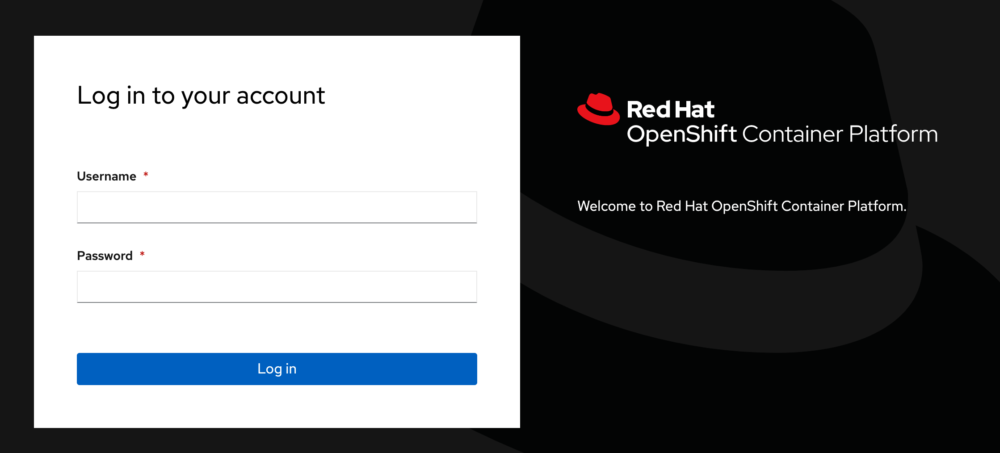
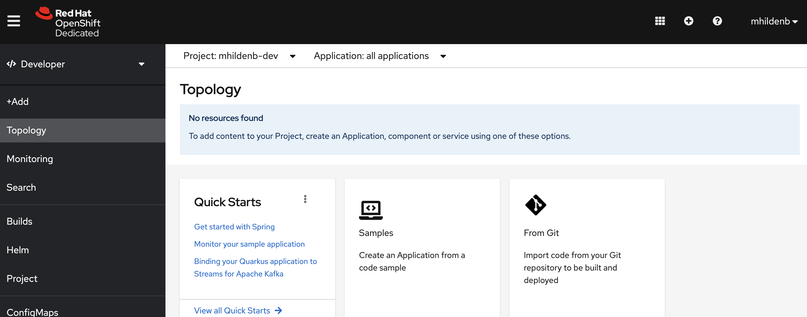

Containers and OpenShift
Now that we have a container let’s demonstrate how one might deploy that container to a platform like Red Hat’s Enterprise Kubernetes solution, OpenShift.
Login to OpenShift
First, let’s log into your OpenShift cluster. Choose the tab that is most appropriate to your current lab. If you are unsure, ask your lab techs.
-
You should be able to reach the OpenShift cluster provisioned for this lab here
-
You should be met with a login challenge screen
 -
Enter the following details
-
Username: %USER%
-
Password: openshift
-
-
Navigate to the Red Hat Developer OpenShift Developer Sandbox page
-
Click on "start your sandbox" and enter your Red Hat account login details
-
From the OpenShift sandbox page, log into your sandbox by clicking on the "DevSandbox" button on the login challenge page

-
Once you login, you should see your
-devproject in the Developer Perspective
If you’ve logged in successfully, you should find yourself on the (empty) start page for the Developer Perspective one the %USER% project[1]
Console Login
For this section we’re going to want to issue commands to OpenShift from the commandline. OpenShift has a CLI called oc [2] which we will leverage.
Here again, choose the proper tab for your setup
-
From the (CodeServer) terminal, enter the following command to log into OpenShift
oc login https://api.%CLUSTER_SUBDOMAIN%:6443 \(1) --username %USER% \ --password 'openshift'1 This is the URL of the REST API for OpenShift with which the CLI interacts
-
From your OpenShift Console UI, click the dropdown in the upper right (with your account name) and select
Copy login command
-
Next, when presented the login challenge select
DevSandbox
-
Click the "Display Token" link
-
Copy the string as indicated in the image

-
Paste the command into a Code Server terminal
If you have logged on successfully, running the following command:
oc whoamiShould yield your OpenShift username (below represents username shown if using Provisioned Cluster)
%USER%Upload Image to Image Registry
Let’s go back to the container that we finished here and look at what a simple deployment to the %USER% project.
OpenShift and Image Registries
In order to be able to run an image in OpenShift or Kubernetes we need to put our image somewhere we’re OpenShift can find it. This usually involves uplaoding the image to either a public or private container registry. Public registries include Red Hat’s quay.io and Docker’s Docker Hub
One of the features that OpenShift adds to Kubernetes is an in-built container registry called an ImageStream. We’re going to create an ImageStream to upload our container to where OpenShift can find it.
We can create the image stream either from the OpenShift Console (UI) or from the terminal (command line).
-
Enter the following command
oc create imagestream \(1) -n %USER% \(2) my-secure-web-server-image (3)1 ImageStreamis an OpenShift specific Kubernetes resource that represents a project specific container registry2 This is the namespace the ImageStreamshould be bound to3 This is the name of the image registry we want to create imagestream.image.openshift.io/my-secure-web-server-image created -
With our
ImageStreamcreated, we can find our registry endpoint with this commandOCP_REGISTRY_URL=$(oc get imagestream my-secure-web-server-image \ -n %USER% \ -o jsonpath='{.status.publicDockerImageRepository}') (1)1 -ois used to specify the output type. In this case we specifyjsonpathwhich means give the output as JSON and then act as if it were piped tojq -rmeaning we specify the field in the JSON we are looking for -
Once we have the
publicDockerImageRepositorywe can use podman to login into it with our OpenShift credentialspodman login \ ${OCP_REGISTRY_URL} \ --username %USER% \ --password "$(oc whoami -t)" (1)1 You must log into imagestream registries using a token and not your user’s password. oc whoami -treturns the currently active token for a given OpenShift session -
This should yield the following output, which indicates that you’ve authenticated with the
ImageStreaminternal registryLogin Succeeded! -
Now we’re going to use a new
podmancommand calledtagto associate our local image with an image that could exist in our ImageStream registrypodman tag \ localhost/secure-container \(1) ${OCP_REGISTRY_URL}:latest (2)1 This, remember is the local name of the image we created in the previous section 2 If you echothis in a shell, this will look something likedefault-route-openshift-image-registry.apps.%CLUSTER_SUBDOMAIN%/%USER%/my-secure-web-server-image:latestwhich is similar to container identification names as we discussed in the Container Autopsy section -
Once tagged, we should now be able to push this image into the ImageStream using the
podman pushcommandpodman push ${OCP_REGISTRY_URL}:latest -
You should see output similar to the following
Getting image source signatures Copying blob 1d505cb9245a done Copying blob 9e12a51e507a done Copying blob 01d2fb866535 done Copying config f8b584bce6 done Writing manifest to image destination Storing signatures
Now we have our image in a place where we can refer to it
Run Container Image on OpenShift
The simplest way to get a container image up and running in OpenShift is with the oc run command. This will create what’s called a pod to house our container that runs based on the image definition we just uploaded to the ImageStream
-
One of benefits of using ImageStreams is that the cluster internal addresss of the ImageStream repo does not require authentication. Let’s use that for the image location for running our pod
CLUSTER_LOCAL_REGISTRY_URL=$(oc get imagestream \ my-secure-web-server-image \(1) -o jsonpath='{.status.dockerImageRepository}') (2)1 Notice that this is the same ImageStream name we’ve been using 2 This time we’re looking not for the publicDockerImageRepositoryfrom the ImageStream definition, but thedockerImageRepositorywhich is the same as the cluster local address of the repo -
Run the following command from the Code Server terminal
oc run \ my-web-server \(1) -n %USER% \ --image ${CLUSTER_LOCAL_REGISTRY_URL}:latest1 The name that will be given to the pod pod/my-web-server created -
Switch to the OpenShift Console (UI) and look at the developer perpective for your project. You should see the pod running
 Figure 1. Our image running in OpenShift
Figure 1. Our image running in OpenShift
Exposing Container Website
Our container is running in OpenShift, but we’d like the rest of the world to have access to our guestbook. To do this on OpenShift we create a Service in that "exposes" our pod and then a Route that "exposes" our service to the world outside the OpenShift cluster.
oc expose \(1)
--port 8080 \(2)
pod/my-web-server (3)| 1 | expose is an oc CLI specific command |
| 2 | We want our service to expose port 8080 |
| 3 | Many resources can be exposed. Exposing a pod (as we’re referencing here) creates a service that points to the pod based on the svcs the pod exports |
service/my-web-server exposedOnce our service is created, we can expose our Service (or svc)
oc expose \
svc/my-web-serverroute.route.openshift.io/my-web-server exposedExposing our service creates a Route in OpenShift. We can interrogate this created route to determine what the publicly accessible endpoint is for our service:
echo "http://$(oc get route my-web-server -o jsonpath='{.spec.host}')/hello.html"This should return output something like this:
http://my-web-server-%USER%.apps.%CLUSTER_SUBDOMAIN%/hello.htmlCopy the output and paste it into any internet connected browser. You should get access to an operating guestbook

OpenShift Security
This the building secure container section we spent a lot of time making our image suitable for running on OpenShift.
Let’s take a quick look at how OpenShift adds a layer of protection around our running of images by looking at what happens when we try to run our insecure container on it.
-
First let’s make use of OpenShift’s internal image registry again (the
ImageStreamwe created before) by tagging the insecure image with a name that binds it to to that registrypodman tag \ quay.io/mhildenb/container-workshop-httpd:0.0.6 \ ${OCP_REGISTRY_URL}:insecure (1)1 Same exact ImageStreamimage registry, just different tag -
With the image tagged for the
ImageStreamregistry, we can now push itpodman push \ ${OCP_REGISTRY_URL}:insecureGetting image source signatures Copying blob bcf3865bf7f7 done Copying blob 86284899b0cc done Copying blob c9e02f9d3afe done Copying blob 4e7c990a129f done Copying blob 210af8709b71 done Copying blob 123257361dae done Copying blob 47e96512450e done Copying blob 8f10e6ebff19 done Copying blob 486383b07939 done Copying blob 23be1053bf93 done Copying blob ee738432d587 done Copying config 60dde8abf7 done Writing manifest to image destination Storing signatures -
Before we attempt to run our image, let’s setup a log watch so that we can see the logs of the pod. We’ll do this in a separate terminal, so first split your terminal, this will be referred to as Terminal 2

To monitor our pod from the terminal we’re going to use a tool called
stern(see here for more info). It allows us to aggregate and view logs from our Kubernetes cluster.To set up a log watch enter the following command
stern -n %USER% \(1) my-web-server-insecure (2)1 The -noption tells the stern to watch for pods in the%USER%namespace2 This is a string that stern uses to match against any pods that exist in the specified namespace. In this case this matches the name we are intending to give our pod -
With our image pushed to the OpenShift image registry, we can now run the image in a pod using the following command (and the "Cluster Local" name of the registry which we obtained above)
-
As the pod starts up we should see the following output from the
sternwatch in the other terminalRecurringsternoutput+ my-web-server-insecure › my-web-server-insecure (1) Error opening stream to student1/my-web-server-insecure: my-web-server-insecure : container "my-web-server-insecure" in pod "my-web-server-insecure" is waiting to start: ContainerCreating - my-web-server-insecure + my-web-server-insecure › my-web-server-insecure Error opening stream to student1/my-web-server-insecure: my-web-server-insecure : container "my-web-server-insecure" in pod "my-web-server-insecure" is waiting to start: ContainerCreating - my-web-server-insecure + my-web-server-insecure › my-web-server-insecure my-web-server-insecure my-web-server-insecure AH00558: httpd: Could not reliably determine the server's fully qualified domain name, using 10.128.2.16. Set the 'ServerName' directive globally to suppress this message my-web-server-insecure my-web-server-insecure (13)Permission denied: AH00058: Error retrieving pid file logs/httpd.pid my-web-server-insecure my-web-server-insecure AH00059: Remove it before continuing if it is corrupted. - my-web-server-insecure1 sternoutputs logs in the format pod-name > container-name '
oc is built on top of kubectl, the generic Kubernetes CLI. Any command you can issue with kubectl you can issue with oc, but oc builds upon kubectl with OpenShift specific commands, such as oc login